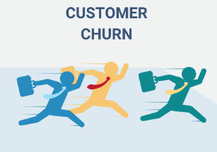
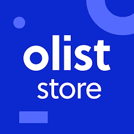

Rizqi Maulidi
Data Scientist & ML Engineer
Passionate about unlocking insights and solving problems through Data and
AI
About Me
Data Scientist and Machine Learning Engineer with a Mathematics background and hands-on experience in building end-to-end machine learning solutions. Skilled in Python, SQL, and ML frameworks such as Scikit-learn and TensorFlow for data preprocessing, modeling, and evaluation. Passionate about transforming data into actionable insights and intelligent systems that support data-driven decision making.
Educational Background
UIN Syarif Hidayatullah Jakarta
Bachelor of Mathematics with Data Science concentration 2021 - 2025
SMAN 44 JAKARTA
Department of Mathematics and Natural Sciences 2017 - 2021
Skills
Programming Language
Python, R, JavaScript
Data Visualization
Tableau, Power BI
Database
PostgreSQL, MongoDB
Work Experience Highlight
Machine Learning Engineer at Naradata ID
Aug 2025 - Present
Designed and implemented data pipelines to ingest and preprocess large-scale Indonesian social media data for analytics and machine learning workflows. Built a Retrieval-Augmented Generation (RAG) chatbot integrated into a web-based monitoring platform.
Machine Learning Engineer
Feb 2025 - Jun 2025

Completed 936 hours of training in Python, Data Analysis, SQL, Machine Learning, Deep Learning, and Deployment. Analyzed Olist Ecommerce data to uncover trends and deployed full-stack ML apps.
Data Scientist
Mar 2024 - Nov 2024
Worked in the Brand Monitoring division for the automotive industry. Conducted NLP project using Aspect-Based Sentiment Analysis (ABSA) and developed insightful visualizations highlighting the top car brands.
Selected Projects
Adopt House

Led the development of a full-stack web-based pet adoption platform as Project Manager, integrating content-based recommendation and image classification models. Coordinated collaboration across frontend, backend, and machine learning divisions.
Customer Churn Prediction

Developed a customer churn prediction system for telecommunications industry using ensemble machine learning approaches by implementing Random Forest and XGBoost algorithms with hyperparameter tuning, achieving 91% accuracy.
Olist Ecommerce Analysis

Conducted in-depth exploratory and advanced analytics on Brazil's Olist ecommerce dataset using Python and Streamlit to generate strategic business insights on revenue, customer satisfaction, and RFM segmentation.
Complete Work Experience
Machine Learning Engineer at Naradata ID
Aug 2025 - Present

- • Designed and implemented data pipelines to ingest and preprocess large-scale Indonesian social media data for analytics and machine learning workflows.
- • Developed and fine-tuned Transformer-based models (BERT) for sentiment, emotion, and topic classification on Indonesian social media datasets, achieving >90% model accuracy.
- • Built a Retrieval-Augmented Generation (RAG) chatbot integrated into a web-based monitoring platform to automate analytical queries and generate daily reports, improving operational efficiency for analysts.
- • Conducted exploratory data analysis (EDA) and social network analysis (SNA) to identify influence patterns, community clusters, and information flow dynamics in public discourse data.
- • Collaborated with cross-functional teams including analysts and engineers to translate business requirements into data-driven machine learning solutions.
Machine Learning Engineer Coding Camp 2025 powered by DBS Foundation
February 2025 - June 2025

- • Completed 936 hours of training in Python, Data Analysis, SQL, Machine Learning, Deep Learning, and Deployment.
- • Analyzed Olist Ecommerce data to uncover revenue, satisfaction, and demand trends.
- • Developed a Gojek sentiment analysis app using LSTM and Transformer models (92.41% accuracy).
- • Built a churn prediction model to identify at-risk customers using classification techniques.
- • Designed a recommendation system with collaborative and content-based filtering.
- • Created insightful visualizations and dashboards with Matplotlib, Seaborn, and Streamlit.
- • Deployed full-stack ML apps with modular architecture (frontend, backend, ML services).
Data Scientist at taudata Analytics
March 2024 - Nevember 2024

- • Worked in the Brand Monitoring division for the automotive industry, analyzing social media data for sentiment and trends.
- • Conducted NLP project using Aspect-Based Sentiment Analysis (ABSA) on social media data, including sentiment and aspect labeling.
- • Performed comprehensive preprocessing and fine-tuned a BERT-based model on labeled Indonesian automotive data.
- • Created sentiment analysis and developed insightful visualizations highlighting the five best-selling car brands in Indonesia for 2023.
Junior Data Analyst at BMKG
January 2024 - February 2024

- • Built a logistic regression model in R to predict rainfall as part of the Climate Early Warning System (CEWS) initiative.
- • Preprocessed climate datasets by classifying wet and dry months and conducted hypothesis testing to optimize model performance.
- • Delivered interpretable results and contributed to improving the accuracy of early warning climate predictions.
Staff, Department RELASI
March 2023 - March 2024

- • Contributed to organizing spiritual and social programs for Mathematics students, focusing on Islamic values and community service.
- • Assisted in planning and executing key programs such as INSAN (Inspirasi Ramadhan), Kajian HIMATIKA, and GAUS (Galang Amal Untuk Sesama) to foster religious awareness and social responsibility.
- • Participated in collaborative initiatives like Sharing With Alumni and HIMATIKA Mengajar, bridging connections between students, alumni, and the broader community.
- • Supported the development of inter-organizational relations through events aimed at enhancing communication and collaboration among student bodies.
Projects
Adopt House

Led the development of a full-stack web-based pet adoption platform as Project Manager, integrating content-based recommendation and image classification models. Coordinated collaboration across frontend, backend, and machine learning divisions as part of the Coding Camp capstone project powered by DBS Foundation.
View on GitHubCustomer Churn Prediction

Developed a customer churn prediction system for telecommunications industry using ensemble machine learning approaches by implementing Random Forest and XGBoost algorithms with hyperparameter tuning, SMOTE for handling class imbalance, and comprehensive feature analysis, achieving 91% accuracy and 0.8843 ROC-AUC score with the Tuned Random Forest model to enable proactive customer retention strategies.
View on GitHubOlist Ecommerce Analysis

Conducted in-depth exploratory and advanced analytics on Brazil's Olist ecommerce dataset using Python and Streamlit to generate strategic business insights on revenue, customer satisfaction, geospatial distribution, and RFM segmentation, culminating in an interactive dashboard deployment in streamlit.
View on GitHubSentiment Analysis Indonesian Gojek app

Performed sentiment analysis on Gojek app reviews scraped from Google Play Store, including exploratory data analysis, Indonesian text preprocessing, lexicon-based sentiment labeling, and training deep learning models (LSTM and Transformer) with the best model achieving 92.41% test accuracy.
View on GitHubStudy Recommendation

Developed a hybrid content-based recommendation system to suggest suitable academic study fields for students by integrating normalized academic scores, extracurricular activities, and career aspirations, leveraging cosine similarity and rule-based profiling, and achieving up to 25.11% recommendation accuracy.
View on GitHubCourse Segmentation Based on Popularity and Course Category Prediction

This project focuses on segmenting Udemy Development courses using machine learning techniques. Using KMeans clustering, 13,608 courses were grouped into three key segments: popular paid courses (high ratings and many subscribers), popular free courses (high engagement but limited content), and unpopular paid courses (low performance, indicating potential for improvement). To automate segmentation for new courses, classification models (KNN, SVM, and Naive Bayes) were trained, achieving up to 100% accuracy—though Naive Bayes offered more stable, generalizable results. The insights gained from this project can support personalized recommendations, targeted marketing, and course content enhancement. Tools used include Python, Pandas, Scikit-learn, and Plotly.
View on GitHubAll Certifications
Applied Machine Learning

Completed 25+ hours of Dicoding courses on ML system design, project deployment, and case studies in predictive analytics, sentiment analysis, computer vision, and recommendation systems.
View DetailData Analysis with Python

Completed 22+ hours of Dicoding courses on data analysis fundamentals, descriptive statistics, data processing, wrangling, EDA, data visualization, and interactive dashboard development with Streamlit.
View DetailDatabase Design & Programming with SQL

Completed 180 hours of training in Database Design and SQL Programming through the Talent Scouting Academy - Digital Talent Scholarship 2024 (90 hours each module).
View DetailData Processing Fundamentals

Completed a 60-hour training program focused on data preparation and processing using Python. Covered software engineering best practices, data storage techniques, ETL pipelines (extract, transform, load), and automation. Final project involved building a simple ETL pipeline to demonstrate end-to-end data handling skills.
View DetailDeep Learning Fundamentals

Completed a 90-hour program on deep learning for text and image data, covering NLP, computer vision, time series, recommendation systems, and model deployment with TensorFlow and Keras. Final project: image classification model.
View DetailBasics of Artificial Intelligence (AI)

Completed a 10-hour introductory course on Artificial Intelligence, covering the fundamentals of AI, data for AI, machine learning, and deep learning concepts. Final assessment included a comprehensive exam.
View DetailGit Basics with GitHub

Completed a 15-hour course on Git and GitHub for code and data management, focusing on version control, branching, collaboration, and portfolio building. Learned to work with repositories, handle pull requests, and contribute to team projects following industry standards. Final evaluation included a comprehensive exam.
View DetailBasic Structured Query Language (SQL)

Completed an 11-hour introductory course on Structured Query Language (SQL), designed for aspiring data analysts and data scientists. Covered fundamentals of databases, DBMS, data definition and manipulation (DDL & DML), and basic queries such as SELECT, INSERT, UPDATE, and DELETE. Final assessment included a comprehensive exam.
View DetailProgramming Basic for Software Developer

Completed a 9-hour beginner-level course on software development, aligned with Indonesia's occupational standards for Software Developers. Covered user and technical requirements analysis, flowchart-based planning, and basic programming using HTML, CSS, and JavaScript. Final assessment included a practical exam and software documentation project.
View DetailContact
You can see some of my available contacts by clicking on them.